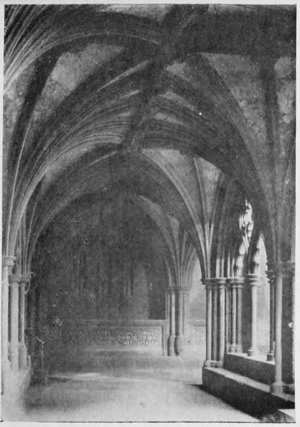
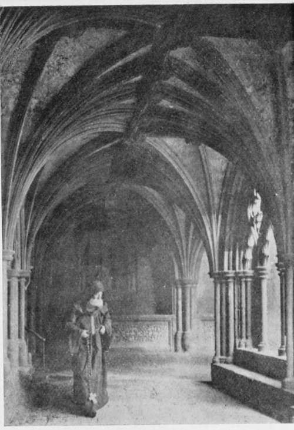
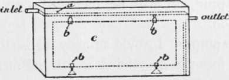
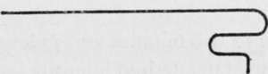

Fixing
Description
This section is from the book "The Barnet Book Of Photography", by Herts Barnet. Also available from Amazon: The Barnet Book Of Photography.
Fixing
The fixing bath may be of the same strength as that used for negatives—the quicker the print is fixed the better; it should preferably be of the acid variety. Five to seven minutes' immersion in such a bath is sufficient. The following is a good formula :—
Fixing Bath
Hyposulphite of soda . . . . I lb.
Sodium sulphite..... 3 ounces.
Citric acid...... f >>
Water •...... 80 ,
Fig. 11.
Fig. 12.
Dissolve the sodium sulphite and citric acid together, and add to the water in which the hypo has been dissolved. After some use the activity of a fixing bath should be tested, by immersing in it one half of a strip of unexposed bromide paper, when the yellow tint of the emulsion should instantly disappear.
Prints should be transferred to the fixing bath without previously rinsing in water.
Fig. 13.
Washing
The washing of large prints is not an easy matter if one has no special apparatus for the purpose. A very efficient method is to support the print in the dish or on a drawing-board, placed at an angle in a bath or sink, and by means of a rubber tube attached to the tap gently squirt water over the face and back of the print. In this way a print may be perfectly freed from hypo in fifteen minutes.
Fig. 14.
A very excellent apparatus for the purpose can be made at a moderate cost. This consists of a small narrow tank with an overflow from the bottom. (See Figs. 13 and 14).
The tank is made of tin, or wood made waterproot, and need not be more than 2 inches wide. A rod a is supported on two ledges, and from this the paper c is suspended by clips b, and held down by small weights attached to clips at the bottom. All hypo contaminated water is carried off from the bottom. Water entering at a rate of a pint in half a minute will wash a print in an hour. If any such vessel is available as a makeshift, the overflow may be made with a piece of compo pipe bent as shown in Fig. 14, the long end being placed in the vessel and the short bend hanging outside. The flow must be started by suction.
Intensification
Should there be a lack of depth of tone, or intensity, in a finished print, it may be increased by a process of intensification.
For this purpose I would strongly advise the worker to avoid any formula containing a salt of mercury. The following is one of the very best.
Soak the print in water for five minutes and then immerse in the following solution :—
Copper sulphate .... 200 grains. Potassium bromide .... 200 ,, Water ...... 10 ounces.
The print will bleach in about three minutes. Wash for one or two minutes in running water, or four changes in still water, then apply a 5 per cent, solution of nitric acid for a minute or so.
Wash for one or two minutes and redevelop with a semi-normal developer till the desired intensity is attained. Wash for fifteen minutes. If the intensification is insufficient, the print may be again bleached and re-intensified as often as desired.
Greater intensification is obtained if the print be exposed for five minutes to daylight immediately after the nitric acid bath.
Still greater intensification may be secured if a z\ per cent, solution of nitrate of silver be used before the developer, and the developer applied after if necessary, Care should be exercised in using the nitrate of silver solution, as staining is very liable to occur if the strength be too great or an insufficient volume of solution be employed. Remember that the same control by means of weak development and bromide of potassium obtains here.
Reduction
If a print be over-developed, or the intensity too great, the process of reduction may be resorted to. But it is my experience that all processes up to the present time are anything but satisfactory, and their application should be avoided if possible.
The following is one of the best:—
Ammonium persulphate . . . 10 grains. Water......i ounce.
Immerse the print in the solution, which must be freshly made each time.
It is some time before the action commences, but this is indicated by the solution becoming milky, and from this point the print must be carefully watched, and the dish rocked continuously. When the desired degree of reduction has been reached, the print is instantly transferred to a 10 per cent, solution of sodium sulphite, which arrests further action. Allow to remain in this solution for five minutes and then wash for fifteen.
I have found that reduction by any method interferes with subsequent colour toning.
Toning
The three primary factors which combine to create the precedence the bromide process has, or should have, over all others, are—rapidity of production, variation of the range of tone in black and white, and the possibilities of colour toning.
The facility with which the many and various tones may be obtained renders this part of the process extremely fascinating. Colour may be obtained in two ways—by substituting another metal for the silver, or forming an amalgam.
It is to be regretted that the formation of an amalgam in some cases has a tendency to jeopardise the permanency of the tone, if not the image itself; and it is therefore advisable, where possible, to secure the tone by substitution.
In a paper read before the Royal Photographic Society, December 1902, I gave a formula for the substitution of platinum for the silver, with the obtention of a fine sepia tone, the beauty of which amply repaid me for several years' patient research in the endeavour to secure it.
The formula is as follows :—
Potassium chloroplatinite . . .1 grain.
Mercuric chloride.....1 ,,
Citric acid ...... 9 grains.
Water ...... 1 ounce.
In this, as in all other processes, soak the print for fifteen minutes before toning.
The speed is about the same as that of a P.O.P. bath ; but in large work it is more economical to stand the dish containing the print in a nearly upright position and apply the solution by means of a broad camel-hair brush, which should be used for nothing else ; the solution collects at the bottom of the dish, thus enabling a smaller volume to be used.
One or two drops of 10 per cent, bromide of potassium prevents any tendency to staining, and produces intensification. A great feature in the above formula is the fact that the depth of tone of the finished print will be precisely the same as before toning, except of course that the scale of gradation will be altered by changing the colour from black to sepia.
Wash after toning for five minutes.
The tone may be changed to its original black colour, but of greater intensity, by immersing in the copper bleaching solution for a few minutes and redeveloping.
Toning With Copper
The following will give a range of tones from purple brown to cherry red :—
Copper sulphate, 10 per cent. . 75 minims. Potassium citrate, 10 per cent. . 1,000 ,, Potassiumferricyanide, 10 percent. 66 ,,
Mix the copper sulphate and potassium citrate together, then add slowly, stirring the while, the potassium ferricyanide.
The action is fairly rapid. Wash for half an hour.
There are many and various other toning formulas for all colours, for which the photographic Press should be consulted ; but among some of the most recent is one for sepia tones, in which I converted the silver image into silver bromide and from it substituted silver sulphide.
Silver sulphide being as stable as the deposited silver of the original image, the permanency of the print is assured. The process is as follows :—Bleach the print as for intensification, then after washing from the nitric acid apply a 2 per cent, solution of sodium sulphide. Toning is instantaneous, and washing for ten minutes is only necessary to remove the excess of toning agent.
Continue to:
Tags
paper, print, negative, exposure, lens, development, camera, focus